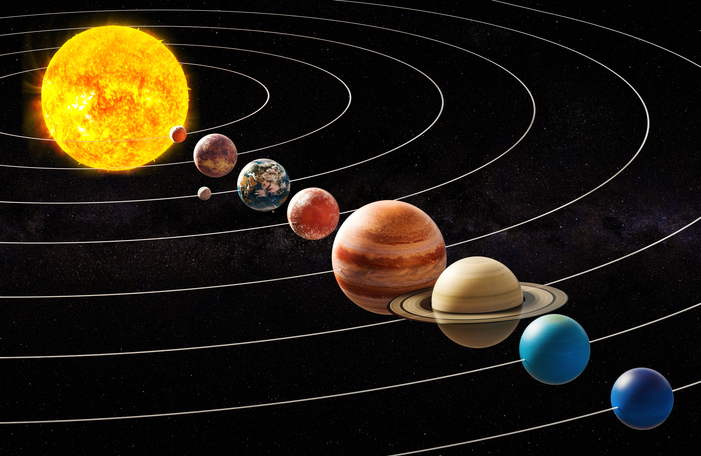

Сонячна система
Сонячна система - планетна система, що включає центральну зірку Сонце і всі природні космічні об'єкти на геліоцентричних орбітах. Вона сформувалася шляхом гравітаційного стиснення газопилової хмари приблизно 4,57 млрд років тому.
Структура системи
Чотири найближчі до Сонця планети, які називають планетами земної групи, — Меркурій, Венера, Земля і Марс — складаються в основному з силікатів і металів. Чотири більш віддалені від Сонця планети, які називають планетами-гігантами, — Юпітер, Сатурн, Уран і Нептун — набагато масивніші, ніж планети земної групи. Найбільші планети-гіганти, що входять до складу Сонячної системи - Юпітер і Сатурн - складаються головним чином з водню і гелію і тому відносяться до газових гігантів; менші планети-гіганти - Уран і Нептун - крім водню і гелію, переважно містять воду, метан і аміак, такі планети виділяються в окремий клас "крижаних гігантів". Шість планет із восьми та чотири карликові планети мають природні супутники. Юпітер, Сатурн, Уран та Нептун оточені кільцями пилу та інших частинок.
У Сонячній системі є дві області, заповнені малими тілами. Пояс астероїдів, що знаходиться між Марсом та Юпітером, схожий за складом із планетами земної групи, оскільки складається з силікатів і металів. Найбільшими об'єктами поясу астероїдів є карликова планета Церера та астероїди Паллада, Веста та Гігея. За орбітою Нептуна розташовуються транснептунові об'єкти, що складаються із замерзлої води, аміаку та метану, найбільшими з яких є Плутон, Хаумеа, Макемаке, Квавар, Орк, Еріда та Седна. У Сонячній системі існують й інші популяції малих тіл, такі як планетні квазісупутники і троянці, навколоземні астероїди, кентаври, дамоклоїди, а також комети, метеороїди і космічний пил, що переміщаються по системі.
Сонячна система входить до складу структури галактики Чумацький Шлях.
Класифікація об'єктів Сонячної системи за складом та формою
Всі об'єкти Сонячної системи, що обертаються навколо Сонця, офіційно поділяють на три категорії: планети, карликові планети та малі тіла Сонячної системи. Планета — будь-яке тіло на орбіті навколо Сонця, що виявилося досить масивним, щоб придбати сферичну форму, але недостатньо масивним для початку термоядерного синтезу, і зумів очистити околиці своєї орбіти від планетезималей. Карликова планета - небесне тіло, що обертається по орбіті навколо Сонця; яке досить потужно, щоб під впливом власних сил гравітації підтримувати близьку до округлої форми, але яке не очистило простір своєї орбіти від планетезималей і не є супутником планети. Об'єкти, що залишилися навколо Сонця, — малі тіла Сонячної системи.
Терміни газ, лід та камінь використовують, щоб описати різні класи речовин, що зустрічаються всюди у Сонячній системі. Камінь використовується, щоб описати з'єднання з високими температурами конденсації або плавлення, які залишалися в протопланетній туманності в твердому стані за майже всіх умов. Кам'яні сполуки зазвичай включають силікати та метали, такі як залізо та нікель. Вони переважають у внутрішній частині Сонячної системи, формуючи більшість планет земної групи та астероїдів. Гази — речовини з надзвичайно низькими температурами плавлення та високим тиском насиченої пари, такі як молекулярний водень, гелій та неон, які у туманності завжди були у газоподібному стані. Вони домінують у середній частині Сонячної системи, складаючи більшу частину Юпітера та Сатурна. Льоди таких речовин, як вода, метан, аміак, сірководень і вуглекислий газ мають температури плавлення до кількох сотень кельвінів, тоді як їхня термодинамічна фаза залежить від навколишнього тиску і температури. Вони можуть зустрічатися як льоди, рідини або гази в різних регіонах Сонячної системи, в туманності вони були в твердій або газовій фазі. Більшість супутників планет-гігантів містять крижані субстанції, також вони становлять більшу частину Урана і Нептуна (так званих «крижаних гігантів») та численних малих об'єктів, розташованих за орбітою Нептуна. Гази та льоди разом класифікують як леткі речовини.
Виведення тексту з різним розміром шрифту
Текстовий годинник
Виведення координат курсору та коду натиснутої клавіші на клавіатурі
Координаті курсору:
Натиснута клавіша:
Змінення розміру текста на сторінці
Звідки ви прийшли. Версія вашого браузера
Ви прийшли з
Ваш браузер:
Зворотній відлік часу
Залишилось часу до появи зображення: 20 секунд